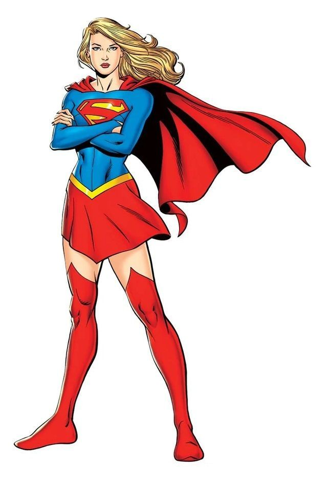

A paixão de infância e juventude de Clark Kent em Smallville. Lana é uma das primeiras confidentes a descobrir o segredo de Clark. Em algumas realidades dos quadrinhos (como a Superwoman), ela adquire poderes através de radiação solar residual, manifestando habilidades de manipulação e transformação de energia elétrica.
Conversão de Energia Solar
Disparos Elétricos e Plasmáticos
Voo Aero-Cinético
Grande Conhecimento Científico
Intuição Aguçada

Supergirl
Kara Zor-El é a prima biológica do Superman, vinda diretamente de Argo City, um fragmento sobrevivente de Krypton. Sob o sol amarelo da Terra, ela manifesta exatamente os mesmos poderes impressionantes de seu primo, mas com uma personalidade jovem, vibrante e uma determinação feroz para proteger o mundo.